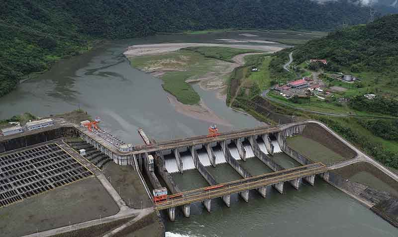

Sinohydro was the constructor, and they had hidden from the Consulting Association and CELEC EP that, since 2012, the eight turbine distributors had cracks that occurred during the manufacturing process".In February 2019, the Comptroller General of the State established in a report that the work generated economic damage to the country due to the existing cracks and established that "as long as the contractual stipulations are not met, (the State) will refrain from accepting the final reception of the project.
Book Now

Coca Codo Sinclair
Metro of Quito

Aromo proyect
According to the 2020 Corruption Perception Index, prepared by the organization Transparency International (2021), Ecuador is scored 39/100 and ranked 92.
Follow us we will share technical information about these and other projects